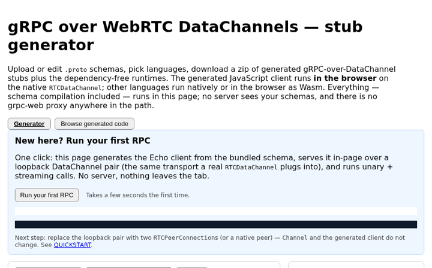

grpc-over-datachannels v0.32.9 — gRPC clients and servers that run in the browser over native WebRTC DataChannels, and natively in 16 languages, from the same .proto schemas. No grpc-web proxy and no external gRPC runtime: every runtime is generated and dependency-free.
WebRTC DataChannels give browsers an encrypted, ordered or lossy/unordered, bidirectional message pipe to any peer — including native processes. This project speaks the gRPC wire protocol directly over that pipe (HTTP/2 framing replaced by DataChannel messages), so a browser tab can call a Rust, Go, Python or Node service peer-to-peer, behind NATs via ICE/STUN/TURN, without a translating proxy.